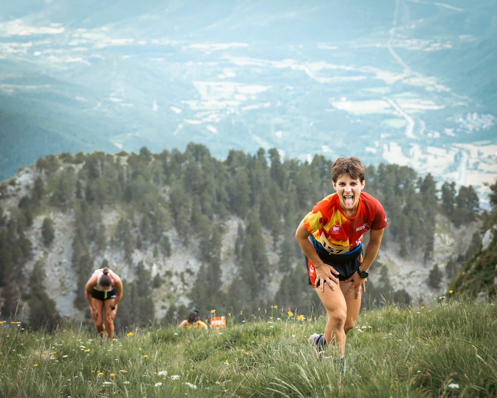
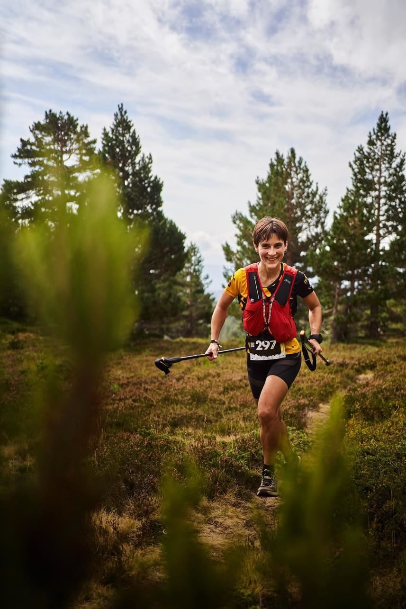
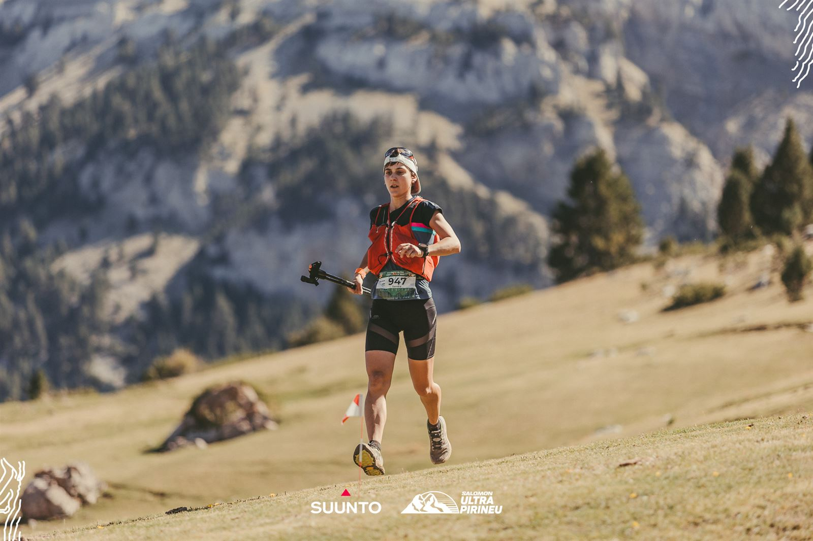
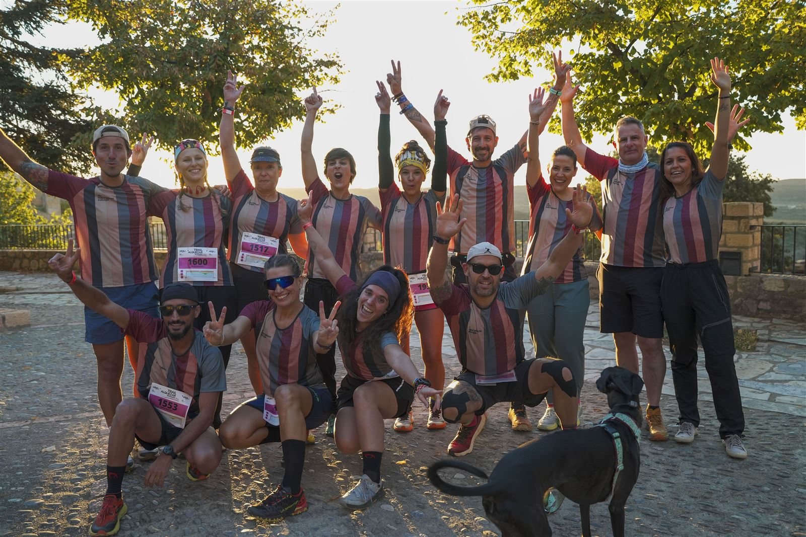
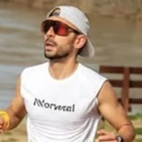
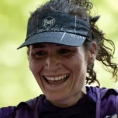
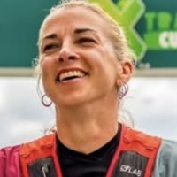
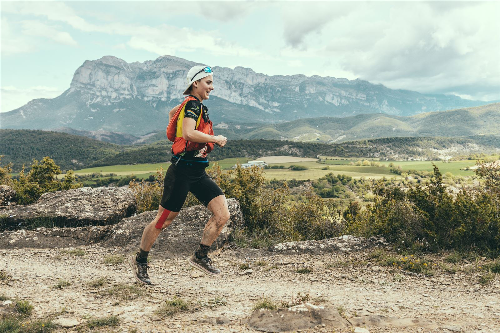

Entrenamiento online · Método Salvaje
Entrenos Salvajes
Un acompañamiento totalmente personalizado para corredores y corredoras de montaña que quieren progresar sin lesionarse, con orden y disfrutando del proceso.
Agenda tu llamada
Este espacio es para ti si…
- Entrenas con constancia, pero sientes que tu rendimiento se ha estancado y sabes que aún tienes mucho más dentro.
- Tienes dudas constantes sobre cómo alimentarte: qué comer, cuándo y si realmente lo estás haciendo bien.
- Antes de una carrera importante, tu cabeza no está a la altura de tus piernas.
- Tu entrenador o entrenadora no se implica: no hay cercanía ni conexión, y no está cuando lo necesitas.
- Has dejado de confiar en lo que ves en redes: demasiada información y poco criterio.
- No tienes un grupo de gente sana y positiva con quien compartir tu pasión por la montaña.

Tu entrenadora
Detrás de cada uno de tus entrenamientos estoy yo, Sandra Cuello: graduada en Ciencias de la Actividad Física y del Deporte, entrenadora especialista en carreras por montaña y corredora de ultradistancia.
He creado una metodología propia donde lo físico y lo mental van de la mano, con una planificación personalizada para cada persona. Porque no se trata solo de seguir un plan: se trata de construir una mentalidad fuerte, aprender a gestionar los momentos difíciles y disfrutar de cada paso del camino.
Aquí no solo tienes un plan: tienes a alguien que entiende tu proceso, tus dudas y tu ritmo.
Cómo entrenamos
El Método Salvaje
Mi forma de entrenar, inspirada en los cinco elementos de la Naturaleza. Cada semana combinamos los que necesitas según tu experiencia, tus objetivos y tu estilo de vida.
- AguaRodaje por zonas
La base: correr suave, cómodo y constante para que tu motor aeróbico crezca.
- TierraFuerza
Piernas y core fuertes para subir, bajar y llegar con fuerza a la meta.
- FuegoIntensidad
Series y cambios de ritmo para ganar velocidad y potencia, en su justa medida.
- AireRecuperación
Descanso, movilidad y respiración. Es aquí donde de verdad mejoras.
- ÉterMontaña
Técnica, desnivel y aventura: donde todo se une, en el terreno real.
Qué incluye
Todo lo que necesitas
- Entrenamientos personalizadosEn TrainingPeaks, con ajustes cada semana.
- Fuerza para montañaCircuitos específicos para correr en montaña.
- Contacto directo conmigoA tu lado para todo lo que necesites durante el proceso.
- NutriciónConsejos para entrenos y competiciones.
- MentalidadConsejos y retos Salvajes para entrenar la cabeza.
- FormaciónAprende la metodología con la que entrenas.
- La Tribu en WhatsAppTu comunidad: un grupo privado con el resto de Salvajes.
- Videollamada grupalUna vez al mes, con toda la Tribu.
Cómo funciona
Tus primeros pasos
Hablamos
Una llamada de 30 minutos para conocerte, ver tu objetivo y comprobar que encajamos.
Te apuntas
Si lo vemos claro, haces el pago y tienes acceso inmediato a la parte teórica.
Valoración inicial
Un formulario para conocer tu historial, tus lesiones, tus objetivos y tu disponibilidad.
Tests iniciales
Un test para analizar tu condición física y otro de movilidad y fuerza.
A entrenar
Accedes a TrainingPeaks, al grupo de la Tribu y a todos los recursos.

Entrenos Salvajes
89 €al mes
- Permanencia mínima de 3 meses. Después, cancelas cuando quieras, sin compromiso.
- Para todos los niveles: se adapta tanto si empiezas como si ya tienes experiencia.
Agenda tu llamada
Antes de empezar hablamos 30 minutos, gratis y sin compromiso: me cuentas tu objetivo y vemos si Entrenos Salvajes es lo que necesitas.
Agenda tu llamadaLa Tribu opina
Testimonios
“Notaba que me había estancado y no le sacaba todo el jugo a mis entrenos. Cuando conocí a Sandra lo tuve claro, por su forma de ser, su cercanía y todo lo que desprende. Casi cuatro meses después, estoy sintiendo cosas que nunca había logrado: la motivación y las ganas de superarme son cada vez mayores.”

Álex“Elegí a Sandra porque es una gran profesional: tiene las herramientas para analizar y entender el entrenamiento, pero sabe que el rendimiento no son solo datos. Somos personas, con vida real y emociones, y ella mide lo que no se puede medir: la confianza, la percepción del esfuerzo, cómo te vas adaptando.”

Rocío“Venía de una segunda lesión de rodilla y me estaba costando mucho volver a encontrar buenas sensaciones corriendo. Con Sandra ha cambiado todo. Su manera de planificar y adaptar las cargas a mi situación me ha ayudado a recuperar la confianza y volver a participar en varias carreras. En este proceso me he sentido comprendida en todo momento. Sin duda ha sido un gran acierto encontrarla.”

SandraDudas
Preguntas frecuentes
¿Necesito experiencia previa?
No. El plan se adapta a ti, tanto si estás empezando como si ya llevas años corriendo por montaña.
¿Cuántos días y horas se entrena?
Depende de tu nivel y de tu objetivo. La mayoría entrena entre 3 y 6 días por semana.
¿Puedo cancelar cuando quiera?
Hay una permanencia mínima de 3 meses. Después, puedes cancelar tu suscripción en cualquier momento, sin compromiso.
¿Puedo resolver dudas antes de pagar?
Sí, para eso está la llamada: 30 minutos, gratis y sin compromiso. También puedes escribirme por WhatsApp o por email.

Nos vemos dentro.
Agenda tu llamada